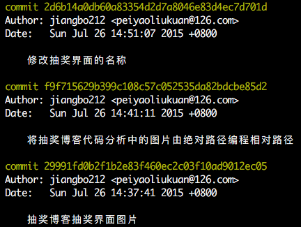
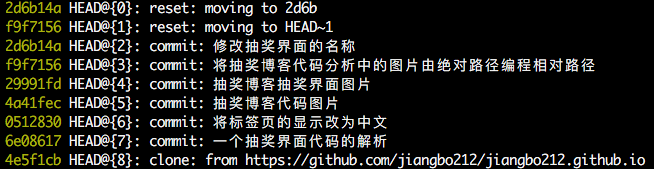

git命令的学习
git add
增加一个文件到git仓库的暂存区。
示例：
git add REMADE.md把文件REMADE.md提交到本地仓库的暂存区。
git commit
把暂存区的文件提交到本地仓库中。
示例：
git commit -m "日志"把本地仓库暂存区中的修改提交到本地仓库中,参数m值得是修改日志，每次从暂存区提交修改到本地仓库都要有日志。
git diff
查看文件修改前与修改后的区别。
git diff <file>查看文件file修改前与修改后的不同点。
git checkout
可以将工作区文件的修改回撤;切换分支
git checkout -- <file>把工作区的文件file之前的修改回撤。
git checkout dev从当前工作分支切换到分支dev
git checkout -b dev
新建分支dev，并切换到分支dev
git status
查看本地git仓库现在的状态，包括工作区是否有文件被修改，暂存区是否有文件。
git status查看所在git仓库是否有变化。
git reset
将本地仓库暂存区的修改回撤或将本地仓库回撤
git reset --hard HEAD~1将本地仓库回撤到前一个状态，如1变成2，则是撤回到当前状态前的第二个状态
git reset --hard "状态版本号"将本地仓库回撤至指定版本号的状态
git reset HEAD REMADE.md将暂存区的REMADE.md文件的修改回撤到工作区
git log
查看本地仓库的版本记录
git log输出如下图
git log --pretty=oneline输出如下图

两种输出内容并无不同，只是在排版上第二种更易看。
git log --graph—graph参数可以看到分支合并图，如下
git reflog
显示本地仓库的提交记录
git reflog如下图：
git rm
删除暂存区内的文件
git rm <file>git push
将本地仓库推送到远程仓库去
git push origin mastergit branch
查看本地仓库的分支
git branch输出所有的本地仓库分支，前带*号的表示是当前仓库
git branch dev新建分支dev
git branch -d dev删除分支dev
git merge
将指定分支合并到当前分支
git merge dev将分支dev合并到当前分支(看不出历史记录)
git merge --no-ff -m "日志" dev将分支dev合并到当前分支，不使用fast forward模式，可以看到历史记录